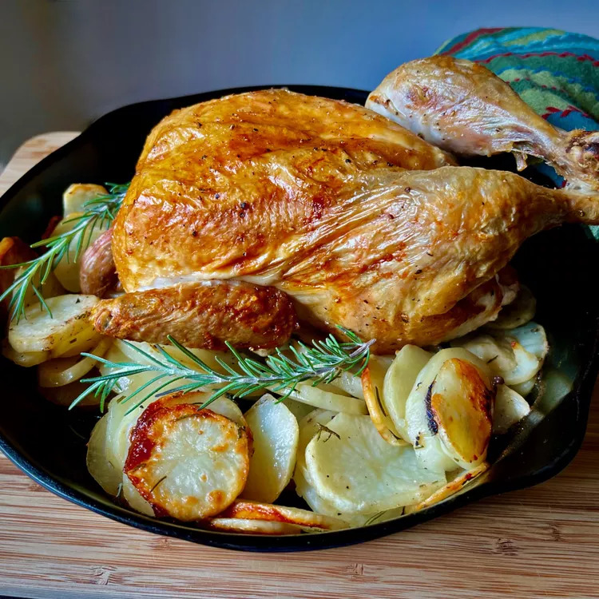

Cast Iron Roast Chicken Potatoes

Description
Cast iron does a wonderful job on chicken in the oven! Using this method, each of the leg quarters come in contact with the heat of the skillet, and the chicken finishes up in the traditional "breast-side-up" position at the end of the cooking. Bonus, you can throw some sliced, seasoned potatoes into the skillet and use the lovely chicken drippings to add a wonderful flavor to the potatoes. I love it, when the oven and one pan can do double duty! Serve with a green salad and some crusty bread.
Ingredients
- 1 (4 pound) whole chicken
- 1 tablespoon avocado oil
- 1 tablespoon olive oil
- salt and freshly ground black pepper to taste
- cooking twine
- 4 1/2 cups peeled, sliced potatoes, about 1/8 inch thick
- 1 tablespoon olive oil
- 1 tablespoon minced fresh rosemary
- rosemary spring for garnish (optional)
Directions
- Place a 10 inch cast iron skillet on the center rack of a cold oven.
- Preheat oven and skillet to 425 degrees F (220 degrees C).
- While the oven is heating, remove any giblets from the chicken, and discard or reserve for stock. Pat chicken dry with paper towels. inside and out.
- Season the inside of the chicken with salt and pepper. Fold the tips of the wings under the neck area of the chicken, and tie the legs together with cooking twine.
- Combine avocado oil and olive oil in a small bowl and brush the outside of the chicken with the combined oils. Reserve any unused oil. Season the outside of the chicken with salt and pepper.
- Carefully place the hot skillet on a heat-safe surface (e.g. your stove) and brush the inside of the skillet with the remaining reserved oils.
- Place the chicken on its side in the skillet, with the leg quarter coming in contact with the hot skilled. Return the skillet to the oven and roast for 25 to 30 minutes.
- Combine sliced potatoes, 1 tablespoon olive oil, minced rosemary, salt, and pepper in a bowl and mix well.
- After the chicken has roasted on one side, place hot skillet on a cutting board, turn the chicken to the other side, and add potato mixture to half of the skillet. Roast for 25 to 30 minutes.
- Carefully pull skillet out of the oven and return to the cutting board. Lift chicken slightly and spread the potatoes over the whole skillet. Place chicken, breast side up, on top of the potatoes. Roast until the chicken is no longer pink at the bone and the juiced run clear, 25 to 30 minutes. An instant-read thermometer inserted into the thickest part of the thigh, near the bone, should read 165 degrees F (74 degrees C).
- Turn off the oven and allow the chicken to rest inside the oven about 5 to 10 minutes. This will keep the skin nice and crispy.
- Garnish with fresh rosemary sprigs, carve the chicken, and serve the chicken and potatoes from the skillet.